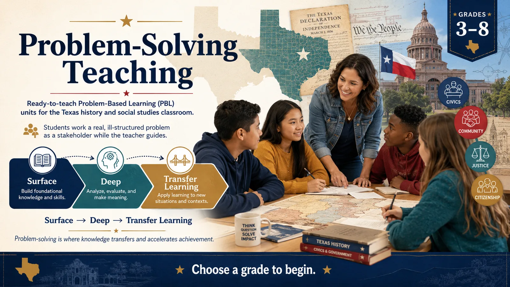

Ready-to-teach Problem-Based Learning (PBL) units for the Texas history and social studies classroom. Students work a real, ill-structured problem as a stakeholder while the teacher guides, building from surface → deep → transfer learning. Choose a grade to begin.
Students learn by working a real, ill-structured problem as a stakeholder. They meet the problem, define it, research what they need to know, weigh options, and propose and defend a solution — while the teacher guides rather than tells (Stepien & Pyke, 1997; Hmelo-Silver, 2004).
Teaching students the skills and strategies to solve problems they don't yet know how to solve. It is high-leverage: PST d ≈ 0.61 and PBL d ≈ 0.53 in the Visible Learning MetaX synthesis of the research.
Problem-solving is a transfer skill — it only pays off once students have built knowledge (surface) and organized it (deep). So every unit sequences those first, then releases the problem. Meeting the problem too early turns inquiry into guessing.
Featured unit: The Town Square Problem. A growing community must decide what to do with one empty lot — needs, scarcity, budgets, and citizenship.
Open Grade 3 → Grade 4 · Texas History · §113.15Featured unit: 1835 — What Should Our Family Do? A Texas family weighs loyalty, rights, and revolution on the eve of independence.
Open Grade 4 → Grade 5 · US History · §113.16Featured unit: A New Life — the Immigration Question, 1914. Students step into Ellis Island as stakeholders and decide how a family should build a new life. Immigration, industrialization, and the problem-solving process.
Open Grade 5 →Featured unit: The Shared River. Three nations must share one river that can't meet every demand — geography, economics, and cooperation.
Open Grade 6 → Grade 7 · Texas History · §113.19Featured unit: Spindletop, 1901. The oil boom transforms a Texas town overnight — how should the community handle the boom?
Open Grade 7 → Grade 8 · US History to 1877 · §113.20Featured unit: Philadelphia, 1787. Delegates must build a government that holds — and decide what to compromise.
Open Grade 8 →